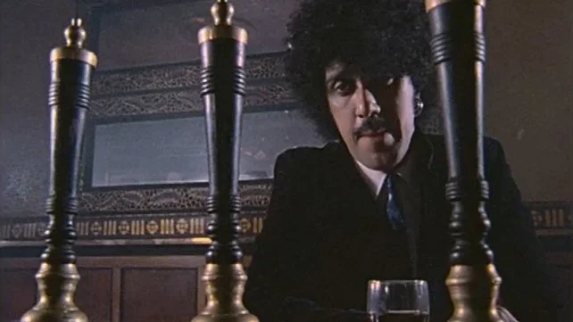

Phillip Parris Lynott
An Archive to celebrate the life and legacy of Phil Lynott

Philip Parris Lynott (20 August 1949 – 4 January 1986) was an Irish musician, songwriter, and poet. He was the co-founder, lead vocalist, bassist, and primary songwriter for the hard rock band Thin Lizzy. He was known for his distinctive pick-based style on the bass and for his imaginative lyrical contributions, including working class tales and numerous characters drawn from personal influences and Celtic culture.
Lynott was born in the West Midlands of England but grew up in Dublin with his grandparents. He remained close to his mother, Philomena, throughout his life. He fronted several bands as a lead vocalist, including Skid Row alongside Gary Moore, before learning the bass guitar and forming Thin Lizzy in 1969. After initial success with "Whiskey in the Jar", the band had several hits in the mid-1970s, such as "The Boys Are Back in Town", "Jailbreak" and "Waiting for an Alibi", and became a popular live attraction combining Lynott's vocal and songwriting skills with dual lead guitars. Towards the end of the 1970s, Lynott embarked upon a solo career and published two books of poetry. After Thin Lizzy disbanded, he assembled and fronted the band Grand Slam.
After a successful multi-band tour in support of Status Quo, the band recorded the album Jailbreak, which proved to be their breakthrough record. Released on 26 March 1976, it featured the worldwide hit "The Boys Are Back in Town" which reached No. 8 in the UK, and No. 12 in the US, their first charting record in that country. The album also charted well on both sides of the Atlantic, reaching No. 10 in the UK and No. 18 in the US, and the follow-up single, "Jailbreak", also performed well. The twin guitar sound had been fully developed by this time and was in evidence throughout the album, particularly on the hit single, and other tracks such as "Emerald", "Warriors" and "Cowboy Song". The album is considered to have financially secured the band, not only enabling them to survive and continue, but also be able to feel the freedom needed to be able to experiment with higher concept thought and Lynott's more lyrically challenging pieces that the group went on to pen. Thin Lizzy toured the US in support of various bands such as Aerosmith, Rush and REO Speedwagon, and they planned to tour there again in June 1976, this time with Rainbow. However, Lynott fell ill with hepatitis and the tour was cancelled, which set them back a few months.
In 1980, though Thin Lizzy were still enjoying considerable success, Lynott launched a solo career with the album, Solo in Soho: this was a Top 30 UK album and yielded two hit singles that year, "Dear Miss Lonelyhearts" and "King's Call". The latter was a tribute to Elvis Presley, and featured Mark Knopfler on guitar.[48] His second solo venture, The Philip Lynott Album (1982) was a chart flop, despite the presence of the single "Old Town". The song "Yellow Pearl" (1982), was a No. 14 hit in the UK and became the theme tune to Top of the Pops.[49]